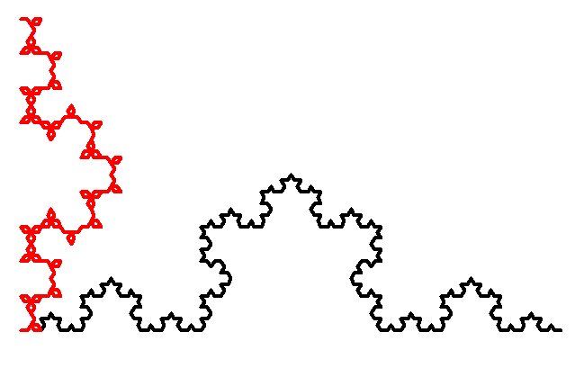
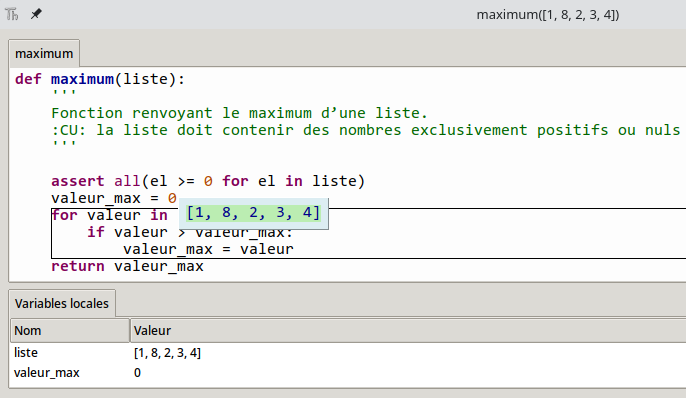
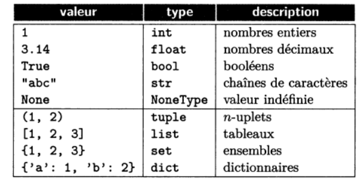

Sources
- dautrylimoges.scenari-community.org
- silanus.fr
- lamadone.frama.io
- Eduscol
- Livres : Hachette Terminale NSI, Serge Bays - Terminale NSI, Balabonski Terminale
Cours - Mise au point des programmes¶
Extrait du programme officiel :
| Contenus | Capacités attendues | Commentaires |
|---|---|---|
| Mise au point des programmes. Gestion des bugs. | Dans la pratique de la programmation, savoir répondre aux causes typiques de bugs : problèmes liés au typage, effets de bord non désirés, débordements dans les tableaux, instruction conditionnelle non exhaustive, choix des inégalités, comparaisons et calculs entre flottants, mauvais nommage des variables, etc. | On prolonge le travail entrepris en classe de première sur l'utilisation de la spécification, des assertions, de la documentation des programmes et de la construction de jeux de tests. |
Lorsque l’on exécute un programme, il peut ne pas fonctionner comme prévu. Par exemple, il peut boucler indéfiniment, ou bien ne pas produire le résultat escompté. Et même s’il fonctionne comme prévu, rien ne garantit qu'il fournisse toujours un résultat correct quelles que soient les données d’entrée qu’on lui fournit. Un dysfonctionnement dans un programme informatique lié à un défaut de conception est appelé "bug" .
Les bugs causent chaque année des millions d’euros de perte pour les entreprises et les États (on peut parler du fameux bug ayant causé l'explosion de la fusée Ariane 5), voire sont parfois responsables de morts civiles ou militaires.
Par ailleurs, un bug peut produire un résultat erroné, un effet de bord non souhaité, voire fournir un résultat inattendu mais très intéressant. On dit qu'un programme est "correct" s'il :
- se termine toujours,
- fait ce que l'on attend de lui (adéquation à la spécification).
Autrement dit, pour que le programme soit correct, il ne doit pas y avoir de bug.
Bugs¶
Point historique
Le terme bug (insecte en français) est apparu sur un document de 1947, écrit par un groupe travaillant sur le calculateur Mark II à l'université d'Harvard. Ce terme était toutefois déjà employé en électricité depuis des dizaines d'années pour évoquer un problème de fonctionnement ou de connexion d'un appareil électrique. Cela a été confirmé par Grace Hopper, informaticienne américaine ayant travaillé sur le Mark I puis sur le Mark II depuis 1943.
Bien sûr, le but est d'éviter autant que possible l'écriture de bugs. Pour ce faire, on peut utiliser des méthodes de développement particulières, ou des outils d’aide au développement (certains IDE sont capables de détecter des erreurs avant l'exécution du programme). Malheureusement, on finit en général tôt ou tard par introduire des bugs dans un programme, auquel cas il faut :
- savoir mettre en évidence le bug et le reproduire ;
- comprendre l'origine du bug ;
- corriger le bug.
C’est ce qu’on appelle la mise au point, ou le déboguage.
Un exemple¶
Voici un programme utilisant le module Turtle, un module permettant de faire du dessin vectoriel en déplaçant une tortue sur l'écran :
from turtle import *
def m1(taille):
forward(taille)
left(60)
forward(taille)
right(120)
forward(taille)
left(60)
forward(taille)
def m2(taille):
forward(taille)
left(60)
forward(taille)
right(120)
forward(taille)
left(60)
forward(taille)
left(60)
def courbe(longueur, niveau, motif):
if niveau == 1:
motif(longueur)
else:
longueur = longueur / 3
niveau = niveau - 1
courbe(longueur, niveau, motif)
lt(60)
courbe(longueur, niveau, motif)
rt(120)
courbe(longueur, niveau, motif)
lt(60)
courbe(longueur, niveau, motif)
up()
goto(-300, -160)
down()
speed(0)
ht()
width(4)
color('black')
courbe(200, 4, m1)
up()
goto(-300, -160)
down()
color('red')
courbe(200, 4, m2)
Les différences entre la fonction m1 et m2 sont minimes : Il y a une seule instruction en plus à la fin de la fonction m2 : left(60). Et pourtant, en exécutant le programme, voici en noir le tracé utilisant la fonction m1, et en rouge le tracé utilisant la fonction m2 :

On voit donc qu'un tout petit élément peut avoir un impact énorme sur le fonctionnement d'un programme ! D'où l'importance de prévenir les erreurs, mêmes celles qui peuvent sembler minimes.
Déceler l'origine d'un bug¶
Pour comprendre la cause d’un bug, il faut d'abord comprendre comment s’est déroulée l’exécution du programme qui a amené au bug. Il est important d'être capable de simuler à la main l'exécution du programme.
Il est également important de connaître, pour chaque fonction, quelles sont les préconditions, c'est-à-dire les conditions sur les paramètres d'entrée. On peut pour cela définir des assertions à l'intérieur de nos fonctions pour vérifier les préconditions, ou au minimum définir les préconditions à l'intérieur de la docstring de nos fonctions.
Par exemple, voici une fonction maximum renvoyant le maximum d'une liste de nombres positifs ou nuls :
def maximum(liste):
'''
Fonction renvoyant le maximum d’une liste.
:CU: la liste doit contenir des nombres exclusivement positifs ou nuls
'''
valeur_max = 0
for valeur in liste:
if valeur > valeur_max:
valeur_max = valeur
return valeur_max
Ici, CU signifie "conditions d'utilisation" (on y indique les préconditions relatives aux paramètres d'entrée). Sur la forme de votre docstring, il n'y a pas de règle particulière. On aurait pu écrire assert ou encore préconditions au lieu de CU, par exemple.
Si l'on ajoute des assertions à l'intérieur de notre fonction :
def maximum(liste):
'''
Fonction renvoyant le maximum d’une liste.
:CU: la liste doit contenir des nombres exclusivement positifs ou nuls
'''
assert all(el >= 0 for el in liste)
valeur_max = 0
for valeur in liste:
if valeur > valeur_max:
valeur_max = valeur
return valeur_max
Pour effectuer une analyse pas-à-pas de votre code, vous pouvez également utiliser un débogueur. De nombreux IDE sont dotés d'un débogueur, c'est le cas notamment de Thonny. (Pour débugguer un script avec Thonny, il faut cliquer sur la petite icône à droite de l'icône d'exécution du script courant.)

Par ailleurs, une autre technique plus primaire mais fort utile consiste à ajouter des affichages à l'intérieur de vos fonctions, avec la fonction print, de manière à observer l'évolution du contenu des variables.
En savoir plus
Pour en savoir plus sur la gestion des bugs, je vous recommande de lire ce document proposé par Eduscol.
Les types d'erreurs en Python¶
Erreurs de syntaxe¶
Les erreurs de syntaxe sont liées à des instructions malformées, qui ne respectent pas les règles du langage. Elles sont détectées lors de l’exécution du programme et sont assez faciles à corriger car un message d’erreur explicite indique la nature et la localisation de l'erreur.
Quelques exemples d'erreurs de syntaxe :
- Mauvaise indentation du code, mélange d'espaces et de tabulations
- Oubli des deux-points à la fin d'une instruction comme
def,ifouwhile - Utilisation de
=au lieu de==pour les tests d'égalité - ...
Erreurs de typage¶
Chaque valeur manipulée par un programme Python est associée à un type. On rappelle les principaux types manipulés en Python :

(extrait du Balabonski terminale)
Voici un exemple d'instruction incorrecte :
>>> '2' + 2
Traceback (most recent call last):
File "<pyshell>", line 1, in <module>
TypeError: can only concatenate str (not "int") to str
En cas d'erreur de type, Python lève une erreur de type TypeError, ici Python indique qu'il n'est possible de concaténer que deux chaînes de caractères.
D'autres erreurs de types :
Parenthèses à la place de crochets (pour un objet qui ne peut pas être appelé) :
Crochets à la place des parenthèses (pour un objet qui ne peut pas être indicé) :
''' mystere : (function), i : (int), a : (int) '''
>>> print(mystere[i])
TypeError: ’function’ object is not subscriptable
>>> print(a[i])
TypeError: ’int’ object is not subscriptable
Opérations entre deux types non compatibles (ici addition) :
Opérations entre deux types non compatibles (ici concaténation) :
 À vous de jouer 1
À vous de jouer 1
Pour chacune des fonctions suivantes, proposez un type pour chacun de ses arguments et un type pour les résultats. Il peut parfois y avoir plusieurs solutions !
Erreurs liées aux effets de bord¶
Un effet de bord est une modification d’une variable qui affecte l’état du programme en dehors de la fonction ou de la méthode où elle a lieu. En Python, cela arrive principalement de deux manières : par les variables globales et par l’aliassage.
On rappelle que pour modifier une variable globale dans une fonction, il est nécessaire d'ajouter l’instruction global <nom de la variable> dans la fonction. Par conséquent, il est rare de créer un effet de bord par erreur.
L’aliassage survient lorsque deux variables référencent la même donnée, ce qui peut arriver avec les types structurés tableau et dictionnaire et avec les objets, notamment lorsqu’on les passe en paramètre.
Les effets de bord indésirables peuvent être difficile à détecter car ils ne lèvent pas d'erreurs à l'exécution. Il s'agit donc de bien documenter les fonctions pour indiquer quels sont les éventuels effets de bord attendus.
Voici un petit exemple :
Si l'on exécute les instructions suivantes :
>>> L = [3,2,1]
>>> mystere()
>>> autre_fonction()
Traceback (most recent call last):
File "C:\Users\demer\Desktop\test.py", line 12, in <module>
autre_fonction()
File "C:\Users\demer\Desktop\test.py", line 8, in autre_fonction
assert L == [3,2,1]
AssertionError
À vous de jouer 2
Pourquoi la fonction autre_fonction a t-elle échouée ?
Erreurs sémantiques¶
L'erreur sémantique, également appelée erreur de logique, est une erreur qui n'implique pas de message d'erreur : le programme semble s'exécuter parfaitement, mais le résultat n’est pas le résultat attendu.
En fait, le programme fait exactement ce que vous lui avez dit de faire, mais ce que vous lui avez dit de faire ne correspond pas à ce que vous vouliez qu’il fasse : la séquence d’instructions du programme ne correspond pas à l’objectif visé. La sémantique (la logique) est donc incorrecte.
Ces erreurs sont particulièrement difficile à identifier, et nécessite d'être capable de vous replonger dans la logique de votre code pour en déceler les failles.
Erreurs à l'exécution¶
Il s'agit d'une erreur qui survient en cours d’exécution (Runtime error), lorsqu'un programme fonctionne déjà, mais que des circonstances particulières se présentent (par exemple, le programme essaie de lire un fichier qui n’existe plus).
Erreurs de valeur¶
Un exemple :
>>> from random import randrange
>>> randrange(1, 3.5)
Traceback (most recent call last):
File "<pyshell#92>", line 1, in <module>
randrange(1, 3.5)
File "C:\python3.7.4.amd64\lib\random.py", line 195, in randrange
raise ValueError("nonintegerstop for randrange()")
ValueError: nonintegerstop for randrange()
Erreurs liés au nommage des variables¶
Le bon nommage des variables est particulièrement important car il permet d'améliorer la lisibilité du programme, et également d'éviter le masquage de variables.
Le masquage de variables peut survenir lorsque :
- Vous importez une bibliothèque et déclarez une fonction dans votre programme qui a le même nom qu'une fonction de votre bibliothèque. Cela peut survenir lorsque vous effectuez des imports de la forme
from ma_bibliotheque import *, il faut vraiment éviter ce type d'imports. Il vaut mieux effectuer des imports de la formeimport ma_bibliothequeou encoreimport ma_bibliotheque as mb, cela permet de faire des appels de fonctions de la formemb.ma_fonction. - Vous utiliser une variable globale à l'intérieur d'une fonction qui porte le même nom qu'un des paramètres de la fonction. Pour éviter cela, on peut par exemple ajouter
g_devant le nom de toutes nos variables globales. Par ailleurs, en général, les variables globales sont utilisées comme des constantes, et on met leurs noms en majuscules par convention.
Autres types d'erreurs...¶
- Erreurs de syntaxe et d'indentation :
SyntaxError: erreur de parenthèse manquante.
Exemple :len([1,2,3]IdentationError(hérite deSyntaxError) : Indentation oubliée, trop grande, blocs mal délimités, etc.
- Erreurs d'exécution d'opérations de base :
IndexError: Accès à un index non présent dans une liste, un tuple, un str...
Exemple :[1,2,3][3]KeyError: Erreur de clé avec un dictionnaire.NameErrorNom de fonction ou de variable mal orthographié.
Exemple :prout("Bonsoir")ValueError: Levée lorsqu'une opération ou une fonction reçoit une valeur inappropriée.TypeError: Opération impossible entre deux types, conversion de type impossible.
Exemple :"3" * "5"ZeroDivisionError: Levée en cas de division par zéro.
- Oubli du
returndans une fonction.
Exercices¶
À vous de jouer 3
Cliquez-ici pour accéder aux exercices.
Spécification et tests¶
Tester un programme (ou une fonction, un module) consiste à vérifier qu’il fonctionne comme prévu dans un maximum de situations possibles. Un jeu de tests est un programme ou un ensemble de programmes qui vise à mettre en défaut la partie testée. Si un test échoue, il faut mettre au point le code, c’est-à-dire identifier puis corriger le problème, et effectuer à nouveau le test.
Attention !
Les jeux de tests ne permettent pas de garantir qu'un programme est correct, à moins que ceux-ci soient exhaustifs (c'est-à-dire que l'on teste notre programme avec toutes les entrées possibles, ce qui n'est pas envisageable la plupart du temps.)
Si l'on veut prouver qu'un programme est correct, il faut utiliser la notion d'invariant vue en première, et pour prouver que notre programme se termine, il faut utiliser la notion de variant. Lorsque l'on parvient à exhiber un variant et un invariant, on peut les vérifier avec des assertions à l'intérieur de notre programme (voir activité préliminaire.)
Durant la phase de conception d'un programme, on commence par :
-
écrire la spécification du programme
-
écrire des jeux de tests pour valider le fonctionnement du programme.
La spécification d'une fonction :
- décrit ce que fait la fonction.
- liste ses paramètres d'entrée et leur type
- indique le type de la valeur de retour
- éventuellement :
- spécifie les préconditions (parfois appelées conditions d'utilisation) sur les paramètres d'entrée,
- indique les effets de bord de la fonction,
- propose des exemples d'utilisation de la fonction,
- indique les erreurs levées en cas de mauvaise utilisation,
- etc.
Elle peut prendre diverses formes, comme un simple titre, un long document, une spécification formelle écrite dans un langage dédié, un ensemble d’exemples d’utilisation, un ensemble de cas de tests, etc.
En Python, on utilise des docstrings (chaînes de caractères sous la forme """ [...] """ ou ''' [...] ''') pour spécifier les fonctions, programmes, classes, etc.
Les tests doivent donc se baser sur cette spécification qui indique ce que le programme est censé faire et ne pas faire.
Plusieurs types de tests¶
Les différents types de tests
On peut classer les tests selon différents critères :
- le niveau des tests (tests unitaires, tests d’intégration, tests de recette) ;
- le processus de conception des tests (tests boîte blanche, tests boîte noire) ;
- le sujet du test (tests fonctionnels, tests de montée en charge, tests d’utilisabilité, etc.).
Voici quelques définitions essentielles concernant les tests.
- cas de test : triplet (descriptif, données d’entrée, résultat attendu) précisant, pour des données précises, le résultat attendu de la partie du programme que l’on veut tester.
- jeu de tests : ensemble de cas de test destinés à valider une partie précise du fonctionnement d’un programme. Le terme test peut se référer suivant les circonstances à un cas de test, à un jeu de tests, ou au processus de test en général.
Niveaux des tests :
- test unitaire : test destiné à tester une petite partie d'un programme (comme une fonction) indépendamment des autres parties.
- test d’intégration : test destiné à vérifier que 2 parties d’un programme, développées a priori indépendamment l’une de l’autre, fonctionnent correctement lorsqu’elles sont mises ensemble.
- test de recette : test destiné à vérifier une fonctionnalité générale d’un logiciel dans son ensemble.
Processus de conception :
On distingue les tests « boîte noire » et les tests « boîte blanche » (à noter que ces notions ne sont pas au programme) :
-
Un test « boîte noire » est un test qui est conçu à partir des données d’entrées potentielles, indépendamment du code écrit. Un test « boîte noire » peut donc être écrit avant le code, ou s’il est écrit après, il doit être écrit par quelqu’un qui ne connaît pas le code.
Exemple : une fonction doit générer l’en-tête d’une lettre. Pour cela, elle prend en paramètre un objet représentant le destinataire de la lettre (prénom, nom, sexe). Sans connaître le code de la fonction, on peut déjà envisager 2 cas de test, un pour un homme et un pour une femme, et vérifier que dans le premier cas l’en-tête commence par « Cher » alors qu’il commence par « Chère » dans le second cas. -
Un test « boîte blanche » est un test qui est conçu à partir du programme. Le but de ce type de test est de tester les différents cas prévus par le programme.
Sujets du test :
- test fonctionnel : test visant à déterminer la correction de l’état final par rapport à l’état initial d'un programme. Si l'on parle de fonctions, il s'agit de déterminer la correction de la valeur de retour (c'est-à-dire vérifier que la valeur de retour soit bien celle qui est attendue) de la fonction par rapport aux données d'entrée. Souvent un test « boîte noire ».
- test structurel : test vérifiant le fonctionnement interne d'un programme. Souvent un test « boîte blanche ».
- test de montée en charge : test visant à vérifier si un serveur continue à bien fonctionner avec un grand nombre de sollicitations simultanées.
- test d'utilisabilité : test destiné à évaluer l’ergonomie (efficacité et simplicité de l'interface utilisateur) d’un programme.
- test de performance : test vérifiant que le logiciel se comporte correctement lorsqu’il est confronté à des données de grande taille ou, pour un serveur, à un grand nombre de connexions.
En savoir plus
Pour en savoir plus sur l'écriture de tests, je vous recommande ce très bon document proposé par Eduscol.
Toutefois, gardez en tête que beaucoup de choses qui y sont présentées ne sont pas au programme. Mais cela peut être intéressant pour votre culture personnelle !
Tests avec des assertions¶
On peut effectuer des tests à l'aide d'assertions.
Si rien ne se passe, les tests sont validés.
def trouver_indice(lst, n):
''' Fonction qui renvoie l'indice de l'entier n dans la liste lst.
Si l'élément n est présent plusieurs fois, l'indice du premier est renvoyé.
:param lst: (list[int]) Liste d'entiers
:param n: (int) Entier à chercher
:return: (int) si élément trouvé, (None) sinon
'''
for i in range(len(lst)):
if lst[i] == n:
return i
assert trouver_indice([2,1,4], 4) == 2
assert trouver_indice([2,1,4], 5) == None
assert trouver_indice([], 1) == None
assert trouver_indice([2,1,8,1,5], 1) == 1
Dans certains cas, il peut également être utile d'effectuer des boucles de tests et des tests aléatoires.
Exemple :
def tri(lst: list[int]) -> list[int] # Prend une liste non-triée, renvoie la liste triée
def generer_liste(n: int) -> list[int] # Génère une liste aléatoire de taille n
def est_trie(lst: list[int]) -> bool # Renvoie True si une liste est triée, False sinon
for n in range(20): # Tester pour des tailles de 0 à 19
for _ in range(10): # Tester sur 10 listes aléatoires différentes
l = generer_liste(n)
assert est_trie(tri(l))
On peut également ajouter un message d'erreur lorsqu'une AssertionError est levée :
À vous de jouer 4
Écrivez une fonction est_pair qui renvoie Truesi un nombre n donné est pair, False sinon, puis créez un ensemble de tests de votre fonction à l'aide d'assertions.
Documentez-bien votre fonction à l'aide d'une docstring et éventuellement d'annotations de types.
Quelques exercices
Voici deux exercices pour vous entraîner à écrire des tests à l'aide d'assertions :
Quelques modules de tests¶
Pas au programme
Les modules de tests sont présentés ici pour votre culture générale, et parce qu'ils vous seront bien utiles si vous souhaitez continuer à travailler dans l'informatique après le bac.
Toutefois, dans le cadre des sujets proposés au bac, les tests sont principalement effectués à l'aide d'assertions. La connaissance des modules de tests présentés ici ne sont donc pas exigibles.
Il existe principalement 3 modules Python pour écrire et exécuter des tests :
unittest: outil de base, intégré à Python ;doctest: outil externe qui permet d’exécuter des tests inclus dans la documentation des fonctions. Les tests servent alors également de documentation de la fonction ;pytest: outil externe qui permet d’exécuter des tests écrits dans des fichiers dédiés. C’est l’outil le plus utilisé, car le plus complet.
Exemples d'utilisation des modules
| fichier | description |
|---|---|
| exemple_doctest.py | Un exemple d'utilisation du module doctest. |
| exemple_pytest.py | Un exemple d'utilisation du module pytest. |
| exemple_unittest.py | Un exemple d'utilisation du module unittest. |
Aller plus loin : La programmation défensive¶
- La programmation défensive consiste à écrire son code de façon à s'attendre au pire.
- Il s'agit d'anticiper le comportement de l'utilisateur final :
- Vérifier que les données saisies et leur type sont "correctes" (= respectent la spécification).
- Si ce n'est pas le cas, interrompre le programme, éventuellement afficher un message d'erreur...
Dans le cadre d'une fonction, il s'agit de s'assurer du respect :
- des préconditions : conditions sur les arguments d'entrée.
- des postconditions : conditions sur la valeur de sortie.
Gérer les exceptions¶
Un bloc d'instructions try... except... permet d'effectuer des actions lorsque des erreurs spécifiques sont levées.
try:
a = int(input('a ? '))
b = int(input('b ? '))
print(a, '/', b, '=', a / b)
except ValueError:
print('Erreur de conversion.')
except ZeroDivisionError:
print('Division par zéro.')
except:
print('Autre erreur.')
Toutes les exceptions (valueError, typeError, etc.) natives de Python sont en fait dérivées d'une classe Exception. Ainsi, ce sont des objets, que l'on peut récupérer en précisant un nom de variable après except comme dans cet exemple :
try:
a = int(input('a ? '))
b = int(input('b ? '))
print(a, '/', b, '=', a / b)
except Exception as e:
print(type(e))
print(e)
Il est également possible de créer ses propres exceptions dérivées de cette classe.
Plus d'informations sur cette page